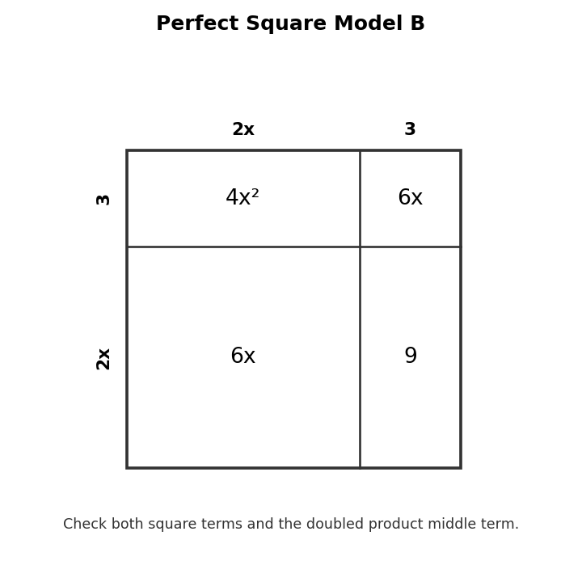

Name the special factoring pattern shown by $9x^2-16$.
Factor completely.
$$x^2-8x+16$$
Analyze whether $4x^2-12x+9$ is a perfect square trinomial. Justify each part of the pattern.

Design one perfect square trinomial and one expression that is close but not a perfect square trinomial. Explain how to tell the difference.
Find two integers with product $-24$ and sum $2$.
Multiply $(x-4)(x+6)$.
Does $(x+3)(x+7)$ multiply to $x^2+10x+21$?
In $2x^2+9x+10$, what is the coefficient of the middle term?
Factor.
$$x^2+2x-24$$
Factor.
$$2x^2+9x+10$$
Determine whether $x^2+4x+8$ factors over the integers. Justify using factor-pair reasoning.
Create an error-analysis problem for trinomial factoring. Include incorrect work and a corrected explanation.
Factor the GCF.
$$15x^2-10x$$
Factor completely.
$$4x^2+20x+24$$
A student factors $12x^2+18x$ as $3x(4x+6)$. Explain why this is not completely factored.
Create a polynomial with three terms that has a GCF and then factors further. Show the complete factorization.